Path of Leash Resistance
El teu humà va enganxat al mòbil i camina amb el pilot automàtic. Tu ets a l'altre cap de la corretja, i tens els teus propis encàrrecs.

Gratuït. Sense anuncis, sense compres, sense compte. Teclat, comandament o tàctil.
Què hi fas
Pilota el pilot automàtic
Una estirada constant decideix cap on va el teu humà enganxat al mòbil. Estira massa fort i se li acaba la paciència amb una correcció que veus venir — tret que et plantis abans.
Fes servir l'aferrament, la corda fluixa i els pals
El teu humà pesa quatre vegades més que tu en una estirada directa. Planta't per aguantar, tiba la corda quan recull, llisca per vores per fer combos o enrotlla't als pals per fer-lo sortir disparat.
Enllesteix els encàrrecs abans de la porta
Marca fanals, ensuma arbustos, arrossega menjar caigut, empaita gats, fuig de les escombradores i arriba a la zona sense corretja amb el mòbil sencer.
Al passeig
- La corretja té física real de corda: enrotlla-la als pals, planta't i guanya l'estira-i-arronsa
- Un humà que respon a la corretja: una estirada constant el guia, estirar sense parar li esgota la paciència
- Cinquanta-cinc passejos fets a mà per Barcelona i els voltants i un tutorial, faci el temps que faci, de dia o de nit
- Set gossos, cadascun amb la seva habilitat i la seva fita d'habilitat
- Tresors enterrats per ensumar, i entrenament per gastar en les seves qualitats
- Cada passeig acaba sense corretja, amb agilitat, estira-i-arronsa i frisbi
- Llista de fites a cada passeig, amb estrelles que obren nous passejos
- Un personatge amb reptes a cada passeig, cadascun amb la seva melodia
- Trucs de corretja: voltes a pals, vuits, passar entre dues persones i lliscar per vores i baranes
- Deu passejos de persecució: l'escombradora, la riuada, la clínica, els senglars, el correfoc, el Dimoni, la seguretat de l'aeroport, la trepitjaneu, les mascotes del parc i les cabres
- Cinc caps estàtua: El Mamut de pedra, El Drac de trencadís, Els Lleons de bronze, La Lleona de Girona i El Gat, un gat de bronze de la mida d'un cotxe
- Estats d'ànim del gos: por, bordades, bogeria i cansament, que canvien com et mous i què notes
- Terra que se sent: la gespa i el fang guarden l'olor, la sorra frena i el terra mullat i la neu fan relliscar
- Altres gossos i els seus humans amb vida pròpia: ensumen, marquen, saluden i s'emboliquen
- Nou cels i sis hores del dia que canvien com es juga cada passeig
- Ossos per gastar en collars, mocadors i pelatges
- En anglès, català i castellà, amb la vibració de pantalla, els flaixos, la mida del text i els controls ajustables
- Compatibilitat total amb comandament, i un tutorial en tres parts per a nous jugadors
- Sense anuncis, sense compres, sense compte, i funciona sense connexió
Novetats
- Quatre nous passejos, cinquanta-cinc en total en cinc capítols d'onze passejos: Rambla del Poblenou (plàtans, orxateries i Plaça de Prim), Les Tres Xemeneies (murals, baranes i tres xemeneies de maó al capvespre), Fira de Santa Llúcia (parades de Nadal i Caga Tió davant la catedral) i Santa Coloma (mercat en pujada del Fondo i dòmino a Plaça del Rellotge).
- Tothom torna a començar per a la campanya completa de 55 passejos, per guanyar totes les estrelles, ossos, gossos i roba sobre el recorregut definitiu. La configuració i els controls es conserven.
- Assignació de cada acció per separat per a tecles, botons, palanques i gallets del comandament, la bogeria al gallet dret per defecte, i detecció automàtica de comandaments Xbox i PlayStation.
- Carrers, sales i boscos dibuixats més enllà dels marges: terrats de Barcelona vora cada illa urbana, les sales de la clínica d'El Veterinari, carrers sencers fora de Plaça Reial i Rambla del Raval, boscos de diverses espècies, un El Gat de bronze que gira i la Fur-goneta peluda redibuixats, i un enquadrament més ampli als combats contra caps.
- Corregit: la casella de «No m'ho tornis a preguntar» ara és accessible amb amunt/avall, i la zona sense corretja nevada de La Molina.
Cinquanta-cinc passejos en cinc capítols
I el Primer passeig, a l'inici de la corretja. Tria qualsevol passeig per veure'n les notes, les captures i les fites (en anglès).
Capítol 1
12 passejos · Acaba amb un cap: La Ciutadella (El Mamut)
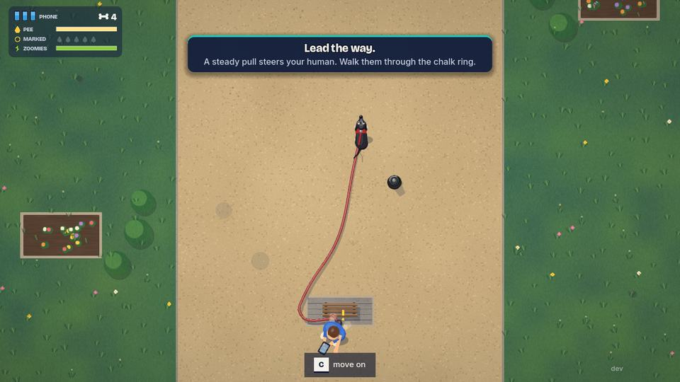
TutorialFirst WalkAprèn la corretja, truc a truc El BarriEl parquet del final del teu carrer
El BarriEl parquet del final del teu carrer
 La RamblaEl passeig ple de gent
La RamblaEl passeig ple de gent
 El ParcEl parc i el seu estany d'ànecs
El ParcEl parc i el seu estany d'ànecs
 Vent, albaPasseig MarítimEl passeig de la platja
Vent, albaPasseig MarítimEl passeig de la platja
 PersecucióSerè, albaLa NetejaLa ciutat neta a trenc d'alba
PersecucióSerè, albaLa NetejaLa ciutat neta a trenc d'alba
 El GòticEls carrerons del barri vell
El GòticEls carrerons del barri vell
 MontjuïcLa pujada serpentejant al castell
MontjuïcLa pujada serpentejant al castell
 El MercatEl mercat cobert a primera hora
El MercatEl mercat cobert a primera hora
 Pluja, diaEl DiluviUn carrer de botigues sota el xàfec
Pluja, diaEl DiluviUn carrer de botigues sota el xàfec
 PersecucióStorm, diaEl BesòsEl parc fluvial que s'inunda
PersecucióStorm, diaEl BesòsEl parc fluvial que s'inunda
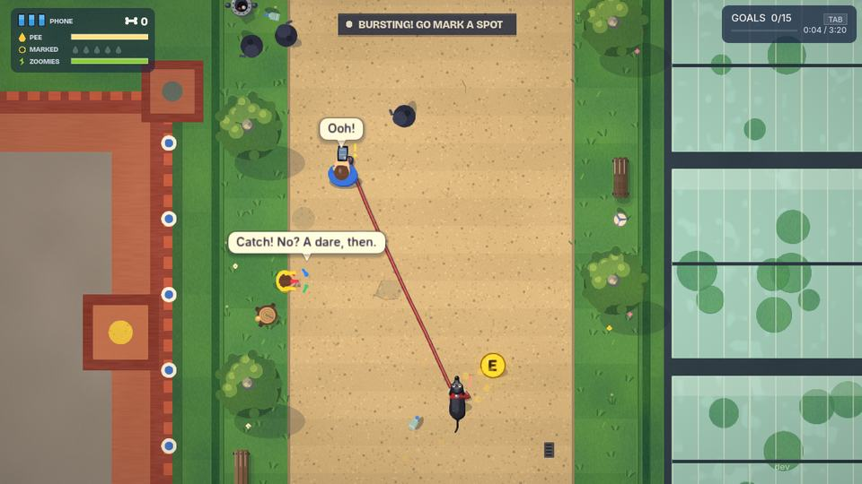
CapLa CiutadellaL'antiga ciutadella i el seu mamutCapítol 2
11 passejos · Acaba amb un cap: El Mosaic (El Drac)
 Vent, diaPlatja de LlevantLa platja dels gossos de la costa
Vent, diaPlatja de LlevantLa platja dels gossos de la costa
 L'EixampleLa quadrícula dels xamfrans
L'EixampleLa quadrícula dels xamfrans
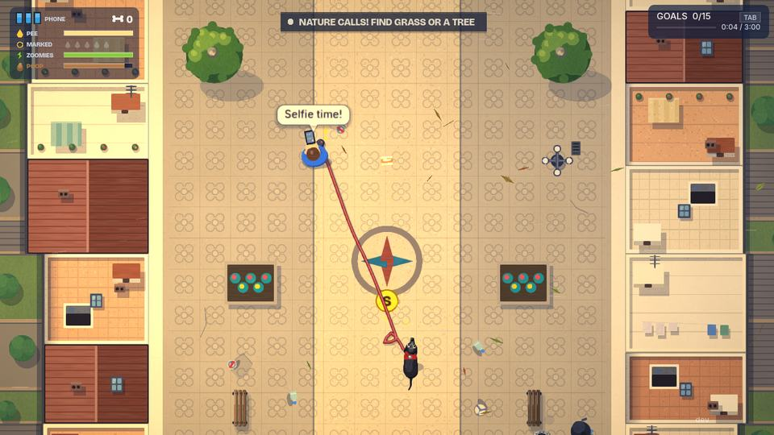
Breeze, morningRambla del PoblenouPlàtans, orxata i brisa de mar Boira, morningEl TibidaboEl cim i les seves atraccions
Boira, morningEl TibidaboEl cim i les seves atraccions
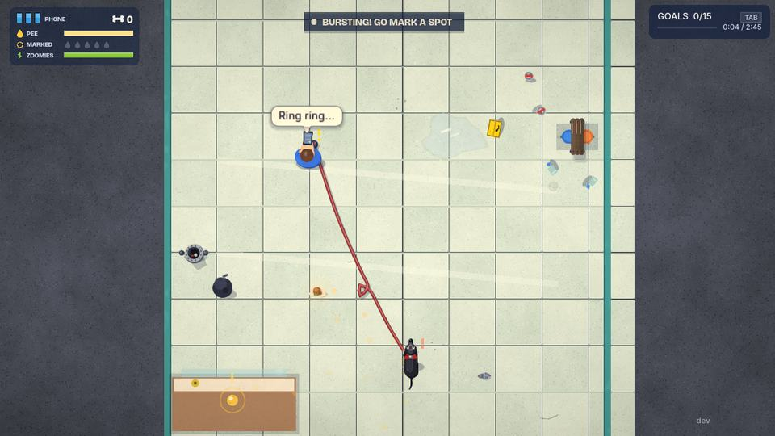
PersecucióEl VeterinariUna visita al veterinari Serè, albaSarriàEl poble que s'empassà la ciutat
Serè, albaSarriàEl poble que s'empassà la ciutat
 El BoscUn camí que serpenteja pel bosc
El BoscUn camí que serpenteja pel bosc
 Els ÀngelsLa plaça dels patinadors
Els ÀngelsLa plaça dels patinadors
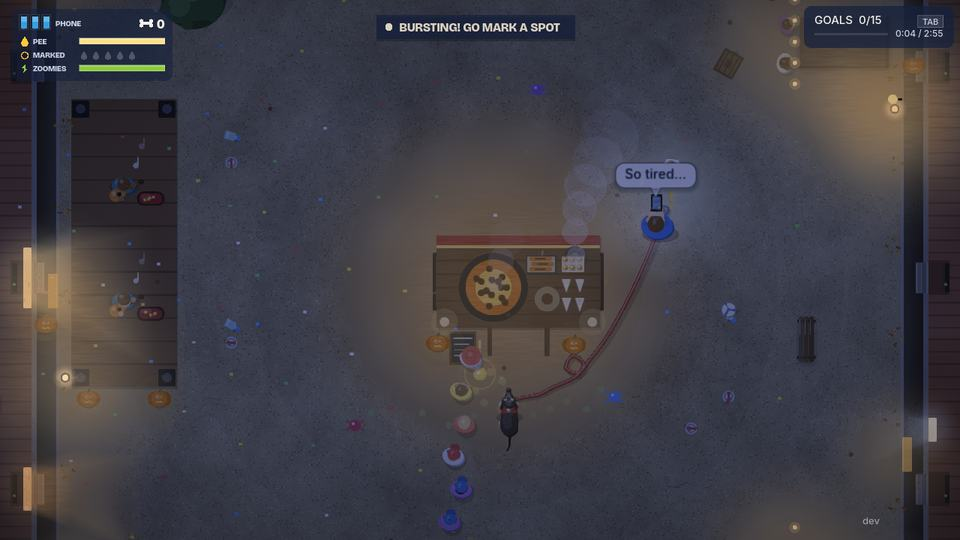
Serè, nitLa CastanyadaLa festa de les castanyes PersecucióEls SenglarsLa baixada salvatge per Collserola
PersecucióEls SenglarsLa baixada salvatge per Collserola
 CapEl MosaicTrencadís i columnes de pedra
CapEl MosaicTrencadís i columnes de pedra
Capítol 3
11 passejos · Acaba amb un cap: El Port (Els Lleons)
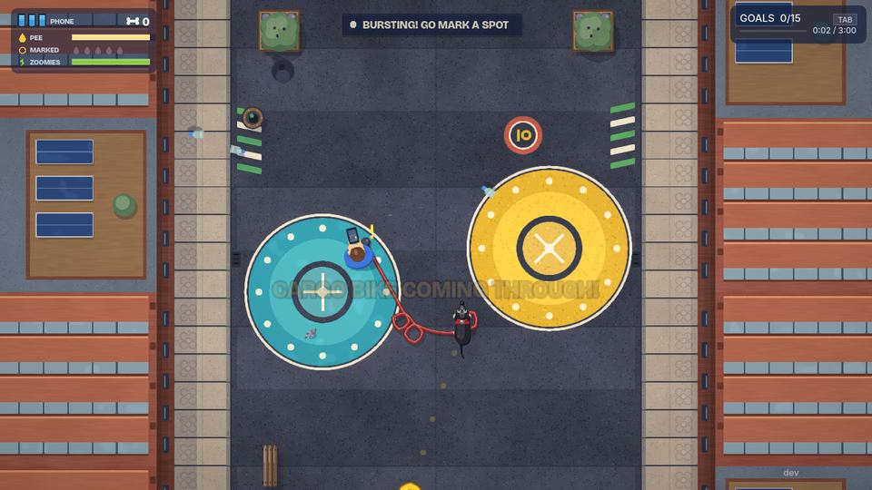
Serè, morningLa SuperillaL'eix verd pacificat per a vianants Pluja, diaEl MetroHora punta, una parada de metro
Pluja, diaEl MetroHora punta, una parada de metro
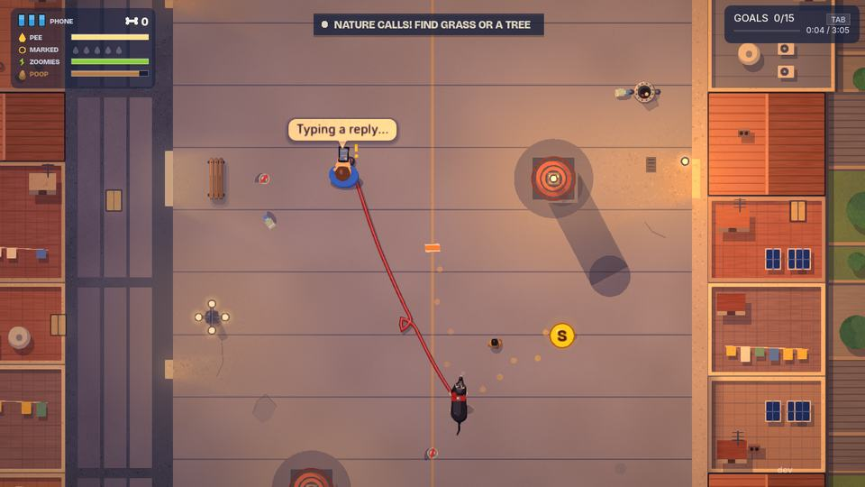
Serè, capvespreLes Tres XemeneiesXemeneies, murals i rampes Serè, capvespreEls BúnquersEl mirador del capvespre
Serè, capvespreEls BúnquersEl mirador del capvespre
 PersecucióSerè, nitLa CremadaLa nit que Badalona crema el Dimoni
PersecucióSerè, nitLa CremadaLa nit que Badalona crema el Dimoni
 L'EstacióHora punta a l'estació de tren
L'EstacióHora punta a l'estació de tren
 Serè, nitPlaça ReialLa plaça porticada de la Rambla
Serè, nitPlaça ReialLa plaça porticada de la Rambla
 Vent, diaEl FòrumLa pèrgola solar vora el mar
Vent, diaEl FòrumLa pèrgola solar vora el mar
 La Carretera de les AigüesL'antic camí de l'aigua al turó
La Carretera de les AigüesL'antic camí de l'aigua al turó
 PersecucióL'AeroportLa Terminal 1, amb seguretat darrere
PersecucióL'AeroportLa Terminal 1, amb seguretat darrere
 CapEl PortLa subhasta de peix al moll
CapEl PortLa subhasta de peix al moll
Capítol 4
11 passejos · Acaba amb un cap: Girona (La Lleona)
 La DiagonalL'avinguda que talla la quadrícula
La DiagonalL'avinguda que talla la quadrícula
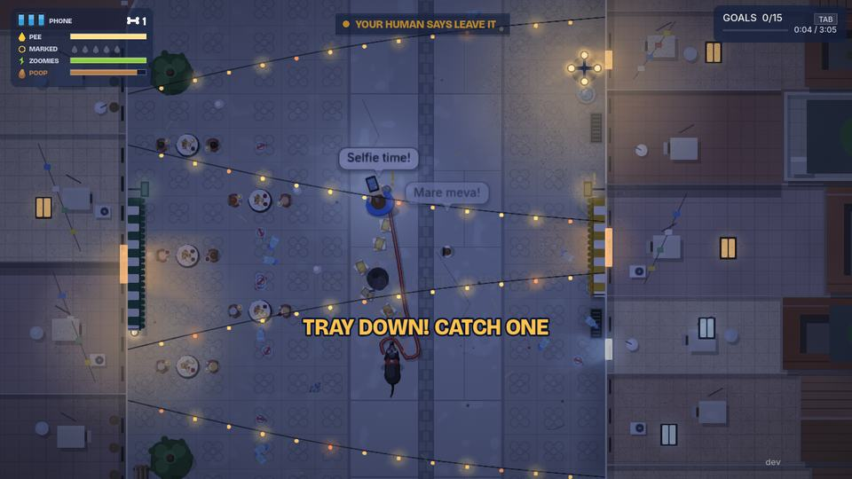
Serè, nitCarrer de BlaiPintxos, i menjar per terra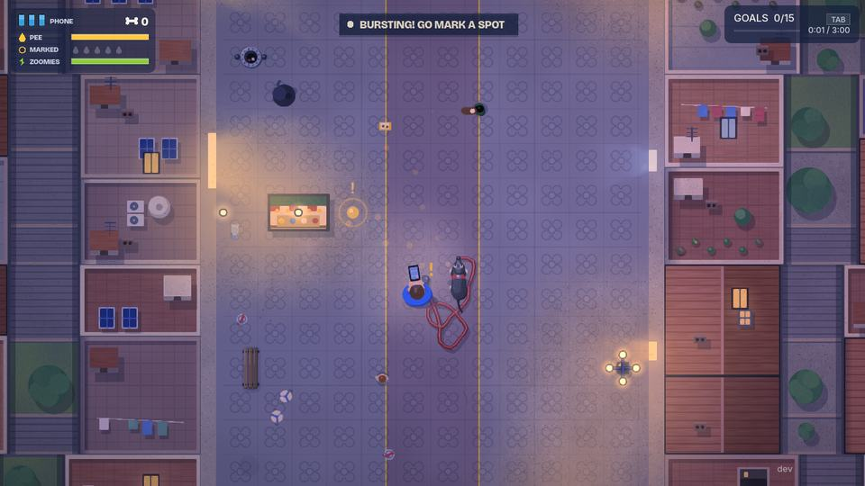
Serè, eveningFira de Santa LlúciaFira de Nadal i Caga Tió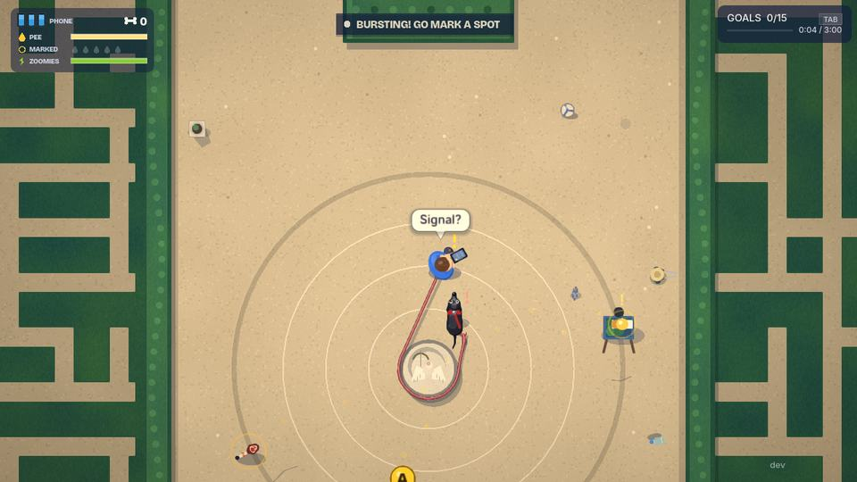
Drizzle, diaEl Laberint d'HortaEl laberint de xiprers PersecucióNeu, diaLa MolinaLa pista i la trepitjaneu desbocada
PersecucióNeu, diaLa MolinaLa pista i la trepitjaneu desbocada
 Serè, nitPlaça d'EspanyaLes fonts màgiques sota el palau
Serè, nitPlaça d'EspanyaLes fonts màgiques sota el palau
 Serè, capvespreSant PauEls jardins de l'hospital modernista
Serè, capvespreSant PauEls jardins de l'hospital modernista
 El Poble EspanyolUn poble emmurallat de còpies
El Poble EspanyolUn poble emmurallat de còpies
 Vent, diaSitgesCarrers emblanquinats vora el mar
Vent, diaSitgesCarrers emblanquinats vora el mar
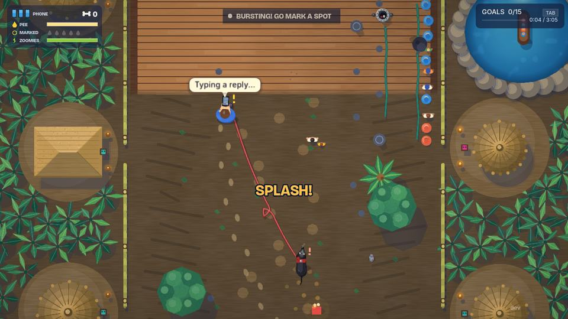
PersecucióLes AtraccionsMuntanyes russes, cues i xurros CapPluja, capvespreGironaCases de l'Onyar, escales i lleona
CapPluja, capvespreGironaCases de l'Onyar, escales i lleona
Capítol 5
11 passejos · Acaba amb un cap: Rambla del Raval (El Gat)
 Les ObresUn desviament per les obres
Les ObresUn desviament per les obres
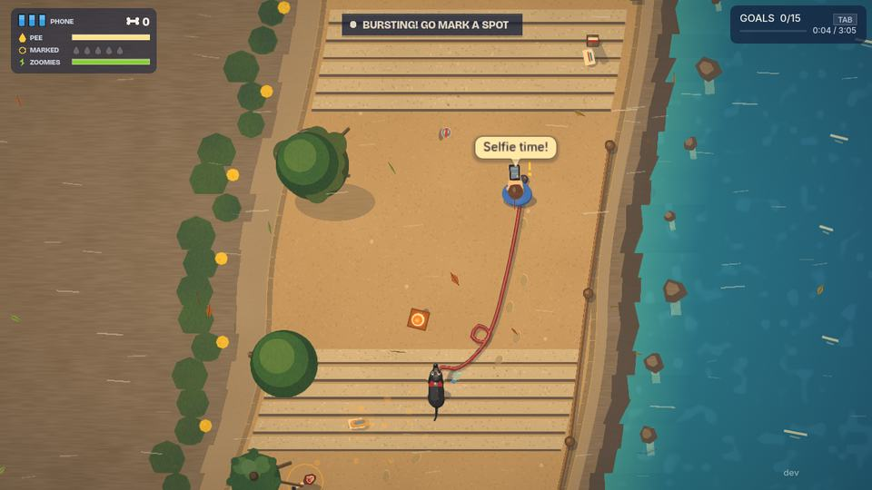
Vent, diaCamí de RondaEl camí de ronda sobre les cales Santa ColomaMercat en pujada, espècies i dòmino
Santa ColomaMercat en pujada, espècies i dòmino
 Serè, nitDia de PartitDia de partit a l'estadi
Serè, nitDia de PartitDia de partit a l'estadi
 PersecucióMontserratCamins de muntanya i cabres soltes
PersecucióMontserratCamins de muntanya i cabres soltes
 Pluja, diaEls EncantsParades d'andròmines sota el mirall
Pluja, diaEls EncantsParades d'andròmines sota el mirall
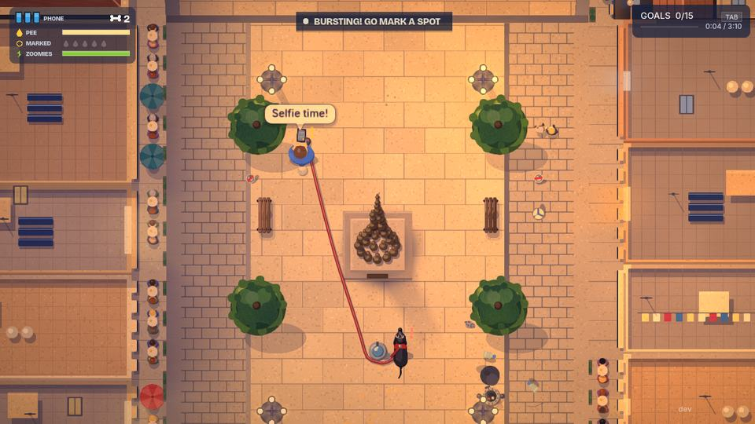
Serè, capvespreTarragonaMuralles romanes al capvespre Boira, morningVicBoira, porxos i fuets penjats
Boira, morningVicBoira, porxos i fuets penjats
 La FerrallaEl desballestament ja tancat
La FerrallaEl desballestament ja tancat
 PersecucióSerè, nitFesta de GràciaLa festa dels carrers guarnits
PersecucióSerè, nitFesta de GràciaLa festa dels carrers guarnits
 CapSerè, nitRambla del RavalOn seu el gat gros de bronze
CapSerè, nitRambla del RavalOn seu el gat gros de bronze
Els cinc caps
Cinc capítols acaben amb un monument de Barcelona que baixa del pedestal per ajustar comptes amb la teva corretja.
 Cap del capítol 1El Mamut (La Ciutadella)El mamut de pedra de mida real que hi ha vora la cascada del Parc de la Ciutadella baixa del pedestal. Embolica'l o fes que carregui dret cap a l'estany de les barques.
Cap del capítol 1El Mamut (La Ciutadella)El mamut de pedra de mida real que hi ha vora la cascada del Parc de la Ciutadella baixa del pedestal. Embolica'l o fes que carregui dret cap a l'estany de les barques.
 Cap del capítol 2El Drac (El Mosaic)El drac de trencadís guarda l'escalinata. Enrotlla la corretja a les columnes de pedra, esquiva el cop de cua i fes-lo ensopegar a les rajoles.
Cap del capítol 2El Drac (El Mosaic)El drac de trencadís guarda l'escalinata. Enrotlla la corretja a les columnes de pedra, esquiva el cop de cua i fes-lo ensopegar a les rajoles.
 Cap del capítol 3Els Lleons (El Port)Dos lleons de bronze guarden la columna de Colom al moll. Porta'ls a envestir-te en pinça al voltant dels norais de ferro i que xoquin entre ells.
Cap del capítol 3Els Lleons (El Port)Dos lleons de bronze guarden la columna de Colom al moll. Porta'ls a envestir-te en pinça al voltant dels norais de ferro i que xoquin entre ells.
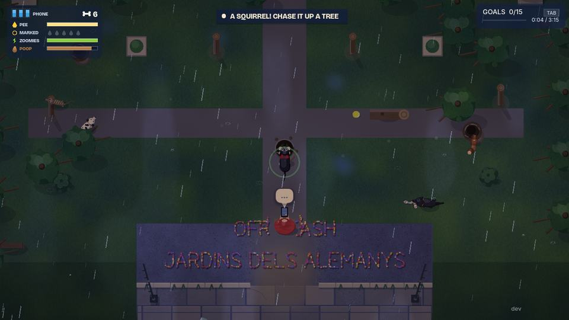
Cap del capítol 4La Lleona (Girona)La lleona de pedra de Girona baixa de la columna i et busca. Amaga't de la seva mirada, porta-la sota la gàrgola i fes-li el petó que li fa tota la ciutat. Cap del capítol 5El Gat (Rambla del Raval)El gat de bronze gras de la Rambla del Raval ronda sota les palmeres, espanta els coloms i salta d'un tendal a l'altre fins que hi llances el teu humà a sobre.
Cap del capítol 5El Gat (Rambla del Raval)El gat de bronze gras de la Rambla del Raval ronda sota les palmeres, espanta els coloms i salta d'un tendal a l'altre fins que hi llances el teu humà a sobre.
Les persecucions
Deu passejos es giren a la porta: arriba al punt de tornada i tot el camí cap a casa es converteix en una persecució.


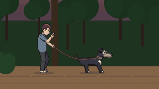
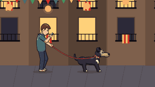
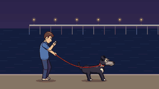


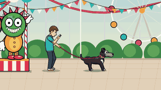
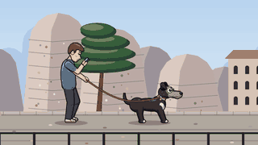
- La Neteja
- El Besòs
- El Veterinari
- Els Senglars
- Festa de Gràcia
- La Cremada
- L'Aeroport
- La Molina
- Les Atraccions
- Montserrat
Set gossos
La Millie passeja amb tu des del principi; les estrelles que guanyes n'obren sis més. Cadascuna es mou, estira i es planta a la seva manera, i cadascuna té una habilitat amb la seva pròpia fita a cada passeig.

Millie
D'iniciMestissa · Tot terreny
De tot una mica, mestra de l'ensumada
L'olfacte Desenterra un tresor amagat

Pipa
15 estrellesLlebrer · Ràpida, es planta poc
Una llebrera llampec que odia plantar-se
L'esprint Esprinta a tope 2 segons

Mochi
25 estrellesBulldog francès · Es planta fort, lent
Un tanc petit i tossut que no es mou
La plantada Fes ensopegar l'humà 2 cops

Bruna
35 estrellesGos d'atura · Guia el teu humà, s'embruta
Una gossa d'atura pelluda que guia el teu humà sense esforç
El guiatge Guia el teu humà 5 segons

Tito
45 estrellesChihuahua · Passa per tot, fàcil d'arrossegar
Un chihuahua minúscul que s'escola entre obstacles i recull la corretja de seguida
L'escletxa Passa per 3 forats estrets

Perla
55 estrellesRatonero bodeguer · Ho desenterra tot, àgil
Una ratera tricolor de celler que desenterra més de pressa que ningú
L'excavada Desenterra 2 forats

Duna
65 estrellesPodenc · Salta bancs, gambada llarga
Una podenca rogenca i blanca que salta un banc des de parada
El salt Salta 2 bancs
Vestuari, entrenament i Nou aspecte
Entre passeig i passeig, gasta ossos en collars, mocadors i pelatges, entrena cada gos amb els punts que guanya o tria un Nou aspecte per al teu humà.
Collars
Donen el color a la mateixa corretja.
Mocadors
Un mocador al coll, si vols (5 colors).
Pelatges
Pelatges i marques (6 estils).
Entrenament i Nou aspecte
Cada tresor que desenterra i cada fita d'habilitat que compleix li dona un punt d'entrenament. Cada gos neix amb avantatge en allò per a què s'ha criat; gasta els punts en 5 qualitats (Velocitat, Aferrament, Guiatge, Agilitat, Olfacte), fins a 5 nivells cadascuna, i cada nivell costa tants punts com el nivell al qual arriba. Abans de sortir, tria un Nou aspecte per al teu humà: 6 tons de pell, 6 colors de cabell, 8 pentinats, 8 samarretes, 5 pantalons i 4 sabates.